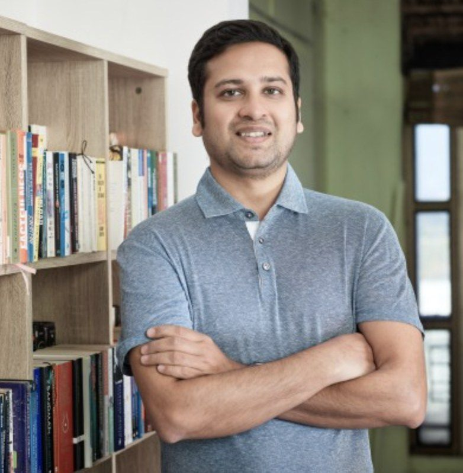

Founder & Owner
Binny Bansal
Binny Bansal is the co-founder of Flipkart, one of the defining technology companies of modern India, and a billionaire technology entrepreneur.
He founded 3State Ventures in 2019 as his private family office and technology investment vehicle, and is its sole strategic decision-maker.
- Co-founder, Flipkart
- Founder, 3State Ventures